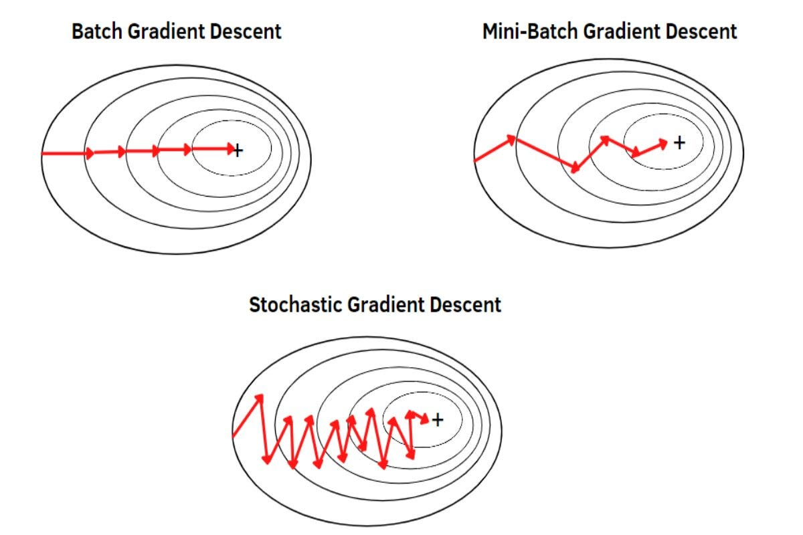

4 · Stochastic Gradient Descent
Stochastic Gradient Descent
Algorithm
Instead of the full dataset, estimate the gradient from a small minibatch and update immediately.
gt ≈ ∇θ Lbatch(θt)
θt+1 = θt − η gt
Pros & cons
Pros
Many updates per epoch — much faster convergence
Gradient noise helps escape saddles and sharp minima
Noise can improve generalization
Cons
Noisy updates — loss curve is less smooth
Sensitive to learning rate choice

Modern training uses minibatch SGD — typically batch sizes of 32–512, not single samples.